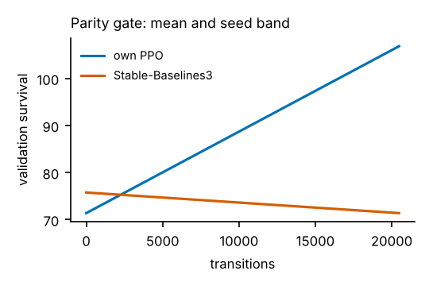
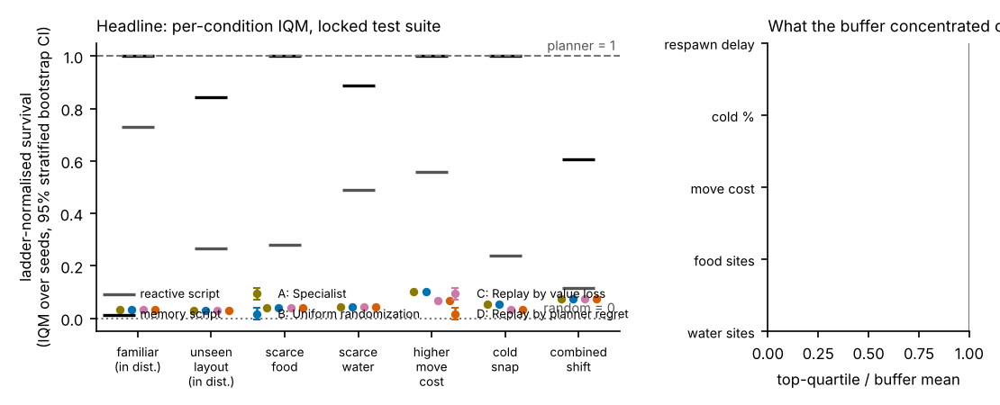
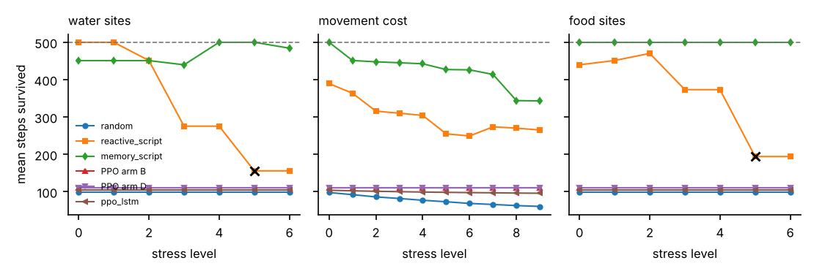
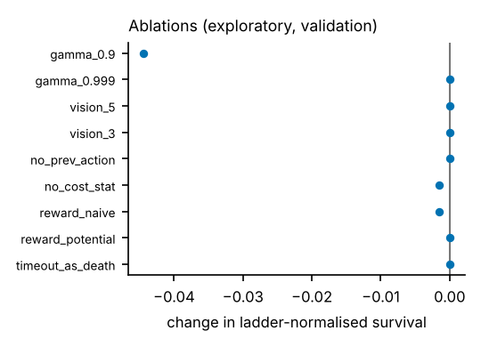
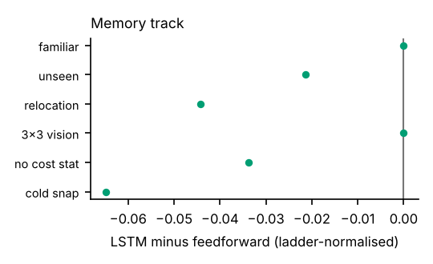

Does sampling training scenarios by planner regret (reference-planner survival minus policy survival) produce agents that survive unseen shifts better than uniform randomization, at equal transition budget? This is a hypothesis, and the report is written so that either answer is reportable. Arms: A specialist (one fixed layout), B uniform randomization, C replay prioritised by positive value loss, D replay prioritised by planner regret; C and D share one buffer implementation, so the score is the only difference. Two comparisons were declared in advance (D vs B, D vs C); everything else is exploratory.
Positioning. Minigrid [Chevalier-Boisvert et al., Minigrid & Miniworld, NeurIPS Datasets and Benchmarks 2023] and Procgen [Cobbe et al., Leveraging Procedural Generation to Benchmark Reinforcement Learning, ICML 2020] are established generalisation benchmarks and Craftax [Matthews et al., Craftax: A Lightning-Fast Benchmark for Open-Ended Reinforcement Learning, ICML 2024] is a fast survival-style benchmark. What this project adds is narrower: a full-information reference planner that yields solvability certificates and exact regret on every scenario, bit-exact integer simulator state, controlled interventions with stress curves, and a locked statistical protocol. Replay-guided environment design is not new: Prioritized Level Replay uses a value-loss score as a regret proxy [Jiang, Grefenstette, Rocktäschel, Prioritized Level Replay, ICML 2021; Jiang et al., Replay-Guided Adversarial Environment Design, NeurIPS 2021], and PAIRED uses regret directly [Dennis et al., Emergent Complexity and Zero-shot Transfer via Unsupervised Environment Design, NeurIPS 2020]. Here regret is cheap because the world is small, which is a limitation of the setting rather than evidence for a general method. This is not a new RL algorithm and no general claim about regret-guided training is made.
AdaptArena-Survival-v1: a 15×15 grid, six actions, reward 1 per living step, 500-step horizon. Energy and hydration are integers in hundredths (0 to 10000),
drains are integers and cost multipliers are integer percents, so NumPy, a future JAX port and every machine produce identical SHA-256 state hashes.
The observation is a 9×9 agent-centred local view with 8 channels plus an 11-value stats vector (energy, hydration, cold, previous action one-hot,
previous action valid, energy drained last step). Invalid moves pay the movement surcharge, invalid interactions only the base drain; simultaneous death causes are
all stored and the primary reason follows hazard, dehydration, starvation. A full-information search planner sees the map, respawn and weather schedules and
returns a plan that survives 500 steps; each plan is replayed in the environment to verify it, and on tiny maps the planner is cross-checked against exhaustive search.
A scenario enters any suite only if the planner certifies it. The planner is a strong reference, never called optimal.
Difficulty calibration (validation seeds only, before any learned policy ran; constants frozen in the analysis plan):
| Condition (validation) | random | reactive script | memory script | planner |
|---|---|---|---|---|
| familiar | 102 | 442 | 500 | 500 |
| unseen_layout | 94 | 449 | 500 | 500 |
| scarce_food | 90 | 160 | 500 | 500 |
| scarce_water | 87 | 246 | 500 | 500 |
| higher_move_cost | 72 | 291 | 500 | 500 |
| cold_snap | 101 | 278 | 500 | 500 |
| combined_shift | 65 | 102 | 335 | 500 |
Learner. PPO written from scratch in one file (Huang et al., CleanRL: High-quality Single-file Implementations of Deep RL Algorithms, JMLR 2022 style; Schulman et al., Proximal Policy Optimization Algorithms, 2017; Schulman et al., High-Dimensional Continuous Control Using Generalized Advantage Estimation, ICLR 2016): vectorised rollouts, GAE with bootstrap on truncation and never on death, clipped surrogate, entropy bonus, advantage normalisation, linear learning-rate decay, gradient clipping, and a recurrent variant on 64-step sequence chunks with hidden-state resets at episode boundaries. It is validated by unit tests (hand-computed GAE with one death and one truncation, ratio 1 and clip fraction 0 on the first epoch, overfitting one batch, a tiny solvable environment, same-seed reproducibility, LSTM and SSM sequence pass equal to the step-by-step pass) and by the parity gate against Stable-Baselines3 [Raffin et al., Stable-Baselines3, JMLR 2021]. Tuned (learning rate, entropy coefficient): ff 0.0003, 0.003; lstm 0.001, 0.003 (SSM reuses the LSTM setting: a recorded difference in tuning effort).
Parity gate with SB3. Both implementations trained with the same hyper-parameters, environment, reward scaling and transition budget on 1 seeds each. Final IQM survival: own 106.5 [106.5, 106.5], SB3 75.1 [75.1, 75.1]; each lies NOT inside the other's interval; mean curves overlap the other's seed band at 0% of evaluation points (threshold 80%). Gate FAILED.

Protocol. 1 seeds per arm at 20,480 transitions each (counted across all environments). Evaluation uses the locked test suite: 7 conditions × 4 planner-certified scenarios,
deterministic actions as the primary mode, identical scenarios for every arm. Statistics follow Agarwal et al., Deep Reinforcement Learning at the Edge of the Statistical Precipice, NeurIPS 2021: IQM with stratified bootstrap confidence intervals, optimality gap against the planner,
probability of improvement, performance profiles, with the training seed within a condition as the unit of analysis. The analysis plan (hypotheses, arms, seed counts, metrics, thresholds, parity criteria, memory predictions) was hashed
(936d3e3909573fa9…) and committed to git before the test suite was generated; the harness refuses to open the suite otherwise and logs every access. Checkpoints are chosen by highest mean validation survival, earlier wins ties.

Pre-declared outcome. Uniform randomization wins here; see the diagnosis of why regret misled. (rule fired: D_loses_to_B). No condition was saturated by every arm, so no condition is excluded for saturation.
| Arm | Aggregate IQM [95% CI] | Optimality gap | Training cost |
|---|---|---|---|
| A: Specialist | 0.05 [0.05, 0.05] | 0.95 | 0 min/run |
| B: Uniform randomization | 0.05 [0.05, 0.05] | 0.95 | 0 min/run |
| C: Replay by value loss | 0.04 [0.04, 0.04] | 0.95 | 0 min/run |
| D: Replay by planner regret | 0.04 [0.04, 0.04] | 0.95 | 0 min/run, 224 planner calls (1 s) |
| Comparison | IQM difference [CI] | P(improvement) [CI] | Claim status |
|---|---|---|---|
| D vs B (pre-declared) | -0.01 [-0.01, -0.01] | 0.36 [0.36, 0.36] | not supported |
| D vs C (pre-declared) | 0.00 [0.00, 0.00] | 0.50 [0.50, 0.50] | not supported |
Under the combined shift, the D−B difference is 0.00 [0.00, 0.00] (exploratory). Training cost for arm D includes planner calls; every arm used the same transition budget.

stress.json.Breaking points: memory_script (water): none within 10 levels; ppo_ff_armB (water): none within 10 levels; ppo_ff_armD (water): none within 10 levels; ppo_lstm (water): none within 10 levels; memory_script (cost): none within 10 levels; ppo_ff_armB (cost): none within 10 levels; ppo_ff_armD (cost): none within 10 levels; ppo_lstm (cost): none within 10 levels.
Probes (each paired with what it does not show). Hydration threshold: constructed states with the stat overwritten, so behaviour off-distribution. Distilled depth-3 tree agrees with the policy on 73% of held-out states (tree survival 110 vs policy 110); agreement is approximation, not the policy's logic. Occlusion heatmaps show input sensitivity only; the training time machine shows when behaviours appear, not why. The point-of-no-return probe forks recorded states every 25 steps and asks the planner for a certificate; it is valid for the planner's search power, not a proof that no plan exists.
Red team. reactive_script: worst certified-solvable scenario scored 0.01 (survival 77); memory_script: worst certified-solvable scenario scored 0.11 (survival 148); ppo_ff_armB_seed0: worst certified-solvable scenario scored -0.03 (survival 92); ppo_ff_armD_seed0: worst certified-solvable scenario scored -0.03 (survival 92) after 20+ candidates each; the five most instructive are in the failure museum with templated narration (no language model).

Ablation effects (ladder-normalised survival vs default, 1 seeds): gamma_0.9: -0.044 [-0.044, -0.044] (hurts); gamma_0.999: 0.000 [0.000, 0.000] (no measurable effect (interval includes zero)); vision_5: 0.000 [0.000, 0.000] (no measurable effect (interval includes zero)); vision_3: 0.000 [0.000, 0.000] (no measurable effect (interval includes zero)); no_prev_action: 0.000 [0.000, 0.000] (no measurable effect (interval includes zero)); no_cost_stat: -0.002 [-0.002, -0.002] (hurts); reward_naive: -0.002 [-0.002, -0.002] (hurts); reward_potential: 0.000 [0.000, 0.000] (no measurable effect (interval includes zero)); timeout_as_death: 0.000 [0.000, 0.000] (no measurable effect (interval includes zero)).
Naive shaping: 0% of valid interactions were taken with a stat at 90% or more (the signature of farming the per-interaction bonus), vs 0% under potential-based shaping.

| Shift | Locked prediction (recurrent vs feedforward) | Scored |
|---|---|---|
| familiar and unseen layouts | recurrent ahead | miss |
| resource relocation | recurrent loses most of its lead | miss |
| vision reduced to 3x3 | recurrent clearly ahead | miss |
| movement-cost increase, energy-cost stat removed | recurrent holds survival better | miss |
| cold snap | no separation | miss |
Recurrent-state probe (held-out episodes, shuffled-label control): steps-since-water R² 0.25 from the hidden state vs 0.12 shuffled and 0.11 from the current observation alone; direction accuracy 0.34 vs 0.28 shuffled (majority class 0.39). This shows whether memory holds task information, and nothing more.
Int8 post-training quantization (stretch, exploratory, measured on Intel(R) Xeon(R) Processor @ 2.80GHz only): ppo_ff: retention IQM 1.00 [1.00, 1.00], 1623→415 kB, latency 0.31→0.28 ms (batch 8, 1 thread); ppo_lstm: retention IQM 1.00 [1.00, 1.00], 1702→436 kB, latency 0.65→0.45 ms (batch 8, 1 thread).
make reproduce TIER=smoke|dev|full runs every stage behind its gate (smoke: minutes on a laptop, 1 seed, in CI on every commit; dev: 3 seeds, 20 scenarios per condition; full: the published benchmark). Config hashes and checksums are in manifest.json; each stage writes a resumable results folder with manifests, episode CSVs, aggregate CSVs, training metrics, replays and a lockfile. Claims in the ledger link to their episode data. Policy weights are omitted from the repository except released checkpoints (model cards in releases/).